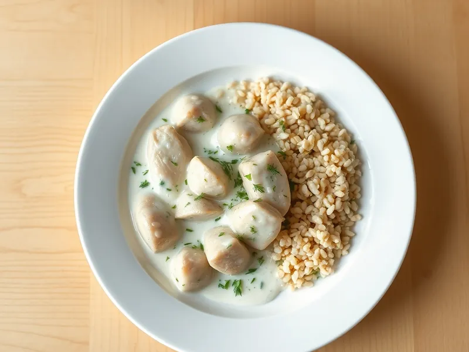

Фото: Иллюстрация ИИ, Cloudflare Workers AI
Курица из супа в сметанном соусе с чесноком
Отварная курица из бульона, прогретая в сметане с луком, чесноком и укропом
20 мин2 порц.554 ккал на порциюБ 48 · Ж 34 · У 13Русская кухня
Продукты на 2 порц.
- Курица готовая (осталась)350 г
- Лук репчатый1 шт
- Сметана 20%6 ст. л.
- Чеснок2 зуб.
- Сливочное масло15 г
- Мука пшеничная1 ст. л.
- Вода100 мл
- Укроп0,5 пучка
- Соль1 щеп.
- Перец чёрный молотыйпо вкусу
Как готовить
- Разберите курицу на крупные кусочки без кожи и костей, лук нарежьте мелко, чеснок раздавите, 5 минут.
- Растопите масло на сковороде на среднем огне и жарьте лук 4 минуты до мягкости.
- Всыпьте муку и жарьте, помешивая, 1 минуту, затем влейте воду или бульон и размешайте без комочков.
- Добавьте сметану, чеснок, соль и перец, доведите до лёгкого кипения.
- Выложите курицу и тушите на слабом огне 5-6 минут, пока соус не загустеет и курица не прогреется.
- Посыпьте рубленым укропом и подавайте с гречкой, рисом или пюре.
Совет. Вместо воды возьмите бульон из того же супа, соус будет вкуснее. Не кипятите сметану сильно, иначе она свернётся.